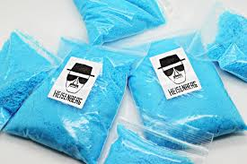

Milanesas con pure de papas
descripcion:
las milanesas con pure de papa son faciles de cocinar, y ambas hacen una gran combinacion a la hora de saborear la comida.
hoy veremos como prepararlas.
ingredientes:
bola de lomo en cortes finos
2 huevos
perejil
pan rallado
leche
papas
sal
guia para prepararlo:
1. con los cortes de carne, recubrirlo en la mescla de huevos y perejil.
2. sacar la carne y empamparlo en el pan rallado hasta que este totalmente cubierto.
3. ahora a las milanesas ya pre-preparadas, las dejamos calentanto en un sarten con aceite caliente.
4. sacamos las milanesas y las dejamos en un plato con papel para sacar el aceite exedente.
5. para preparar el pure, pelamos las papas y las cortamos en cubitos.
6. las dejamos hablandarse en agua hirviendo y les tiramos un poco de sal.
7. las sacamos y las aplastamos.
8. al mismo tiempo, les echamos un poco de leche para que ambas se convinen.
9. una vez ya preparado todo, preparamos el plato, le colocamos el pure de papa y milanesa y listo.
volver
Pastel de papa
Un clasico de comidas rapidas, ademas de ser simple de preparar es deliciosa a todo sabor.
Ir
Sopa Paraguaya
Perfectas para eventos familiares, con esta receta nunca dejaras de prepararlas por su sabor y textura unico.
Ir

Helado casero
Se acerca la ola de calor en este largo verano, asi que te ofrecemos la ayuda que necesitas, unos refrescantes helados caseros que te separaran de las altas temperaturas..
Ir

Cristal_azul
De la famosa serie, Breaking Bad, se mostrara como replicar esta receta que esta compuesta por azucar y... adivinalo o entra al sitio a descubrirlo.
ir
Milanesas con pure de papas
descripcion:
las milanesas con pure de papa son faciles de cocinar, y ambas hacen una gran combinacion a la hora de saborear la comida.
hoy veremos como prepararlas.
ingredientes:
guia para prepararlo:
1. con los cortes de carne, recubrirlo en la mescla de huevos y perejil.
2. sacar la carne y empamparlo en el pan rallado hasta que este totalmente cubierto.
3. ahora a las milanesas ya pre-preparadas, las dejamos calentanto en un sarten con aceite caliente.
4. sacamos las milanesas y las dejamos en un plato con papel para sacar el aceite exedente.
5. para preparar el pure, pelamos las papas y las cortamos en cubitos.
6. las dejamos hablandarse en agua hirviendo y les tiramos un poco de sal.
7. las sacamos y las aplastamos.
8. al mismo tiempo, les echamos un poco de leche para que ambas se convinen.
9. una vez ya preparado todo, preparamos el plato, le colocamos el pure de papa y milanesa y listo.
Pastel de papa
Un clasico de comidas rapidas, ademas de ser simple de preparar es deliciosa a todo sabor.
IrSopa Paraguaya
Perfectas para eventos familiares, con esta receta nunca dejaras de prepararlas por su sabor y textura unico.
IrHelado casero
Se acerca la ola de calor en este largo verano, asi que te ofrecemos la ayuda que necesitas, unos refrescantes helados caseros que te separaran de las altas temperaturas..
IrCristal_azul
De la famosa serie, Breaking Bad, se mostrara como replicar esta receta que esta compuesta por azucar y... adivinalo o entra al sitio a descubrirlo.
ir